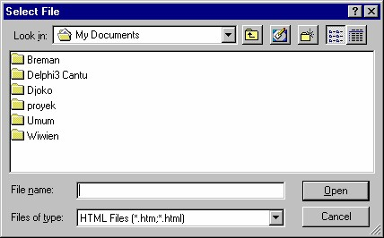

10 Menyisipkan teks dan elemen khusus
10.1 Menyisipkan teks dari file
Apakah Anda ingin memasukkan teks yang telah jadi ke halaman web yang sedang
Anda kerjakan?
Caranya cukup dengan menyorot teks yang Anda inginkan dan menyalinnya lalu
menempelkannya ke halaman yang sedang Anda kerjakan.
Tetapi kalau teks yang hendak disalin berukuran besar dan Anda ingin menyalin
keseluruhan file tersebut, maka akan lebih mudah untuk menyisipkan file itu
langsung ke halaman web. Untuk itu Anda dapat menjalankan perintah Insert _
File. Anda akan melihat kotak dialog Select File.

Gambar 4.20 Kotak dialog Select File
Kemudian pada kotak dialog tersebut Anda dapat memilih file yang ingin Anda
sisipkan. Anda dapat menyisipkan file -file dengan tipe seperti Tabel 4.4 berikut ini:
Pada waktu Anda menyisipkan sebuah file, FrontPage XP akan mengubah file
tersebut agar sesuai dengan format yang digunakan oleh FrontPage XP, lalu
menambahkan tag-tag HTML yang dibutuhkan.
10.2 Pemutus baris
Teks pada halaman web memiliki beberapa elemen khusus, antara lain pemutus baris
(Line Break), garis horisontal, simbol dan komentar.
Tidak seperti program pengolah kata, halaman web menangani baris teks dengan
cara tersendiri.
Pada pengolah kata, Anda dapat menempatkan baris kosong sebanyak yang Anda
inginkan di dalam suatu halaman. Namun Anda tidak dapat melakukan hal ini pada
halaman web. Bahkan, banyak program pembuat HTML yang tidak dapat
memasukkan baris kosong.
Mengapa? Karena HTML tidak mampu mengenali baris kosong yang dibuat dengan
menekan Enter atau Return lebih dari dua kali. Browser tidak bisa mengenali ruang
lebih besar dari dua baris dan ruang jarak antar baris.
Namun, apabila Anda menempatkan baris kosong pada teks dengan menggunakan
FrontPage, baris kosong itu nanti akan dikenali pada file HTML, karena FrontPage
membuat kode khusus untuk pembuatan baris kosong ini, yaitu sebuah
perintah yang memberitahu browser untuk memasukkan baris kosong.
Ada dua cara untuk mengakhiri suatu baris pada HTML. Yang pertama adalah
dengan tag <p>. Tag ini menandakan akhir suatu paragraf. Untuk membuat tag ini,
Anda cukup menekan Enter.
Sedangkan cara kedua adalah tag jarak baris <br>, yang berarti teks berikutnya akan
dipindahkan satu baris ke bawah, tetapi tetap dianggap bagian dari paragraf
sebelumnya (jadi format paragraf sebelumnya tetap berlaku pada teks itu).
Tag ini dimasukkan ke dalam teks Anda dengan menekan Shift+Enter, atau dengan
mengaktifkan perintah Insert _ Break lalu klik tombol OK pada kotak dialog
Break yang tampil (lihat Gambar 4.12).
Gambar 4.12 Kotak dialog Lin e Break
Pilihan yang disediakan kotak dialog tersbeut antara lain:
• Normal line break , menghasilkan pemutusan baris normal seperti yang
dihasilkan kalau Anda menekan tombol SHIFT + ENTER.
• Clear left margin adalah pemutusan baris yang memindahkan baris ke
bawah gambar sehingga batas kiri teks tepat pada batas margin kiri. Ini
berguna pada paragraf yang memiliki gambar di sisi kiri.
• Clear right margin adalah pemutusan baris yang memindahkan baris ke
bawah gambar sehingga batas kanan teks tepat pada batas margin kanan. Ini
berguna pada paragraf yang memiliki gambar di sisi kanan.
• Clear both margins adalah pemutusan baris yang memindahkan baris ke
bawah gambar sehingga batas kanan dan kiri teks tepat pada batas masingmasing.
Dengan pilihan-pilihan tersebut Anda dapat menentukan di mana baris berikutnya
akan ditempatkan apabila ada gambar yang menghalangi.
Pilihan-pilihan ini sekilas kurang begitu berguna. Tetapi kalau Anda menemui
masalah batas antara teks dan gambar, pilihan-pilihan tersebut akan terasa sangat
berguna.
Sebagai contoh, misalnya Anda memiliki suatu gambar dan Anda telah menentukan
batas teksnya sedemikian rupa sehingga teks tersebut dibatasi oleh gambar di bagian
kiri, sedangkan teksnya disusun vertikal pada bagian kanan gambar. Apabila Anda
menyisipkan jarak baris yang normal, maka teks akan ditempatkan pada satu baris ke
bawah dan akan demikian seterusnya, sedangkan gambar akan tetap berada di kiri
teks.
Nah, jika Anda tidak ingin hal seperti itu terjadi, sebaliknya ingin menempatkan
baris berikutnya di bawah gambar itu, maka Anda dapat mengaktifkan pilihan Clear
Left Margin. Perintah ini mempunyai arti bahwa “tempatkanlah teks pada satu
baris ke bawah sampai batas akhir gambar”.
Apabila Anda klik tombol toolbar Show/Hide ( ), Anda bisa melihat simbol
yang menunjukkan pergantian baris keras. Lihat Gambar 4.13.
Gambar 4.13 Tanda Format Mark dan tombol Show/Hide
10.3 Menyisipkan garis horisontal
Anda mungkin telah memperhatikan bahwa garis horisontal banyak digunakan pada
halaman web, difungsikan untuk memisahkan satu blok informasi dengan blok
lainnya.
Gambar 4.14 Horizontal Line
Ukuran garis horisontal pada browser akan secara otomatis mengikuti lebar layar,
yaitu tepat selebar bidang layar. Kalau Anda mengubah lebar layar, maka garis
horisontal akan mengikutinya, sehingga tidak kekurangan ataupun kelebihan.
Garis horisontal membentuk baris kosong sebelum dan sesudah posisinya.
FrontPage menyediakan dua cara untuk menyisipkan garis horisontal. Selain dengan
perintah Insert _ Horisontal Line , Anda juga dapat memakai kode HTML untuk
menuliskan tag <hr>.
Gambar 4.15 Tag garis horisontal
Berikut ini cara pengaturan garis horisontal:
1. Pilih Insert _Horizontal Line . Garis horisontal akan ditempatkan kedalam
halaman Anda. Apabila garis tersebut persis seperti yang Anda inginkan,
Anda dapat berhenti sekarang. Jika tidak, ikuti langkah berikutnya.
2. Klik dua kali garis itu, atau klik kanan dan pilih Horizontal Line
Properties. Kotak seperti Gambar 4.16 akan terbuka.
Gambar 4.16 Kotak dialog Horizontal Line Properties
3. Dengan kotak dialog di atas, Anda bisa menentukan lebar garisnya pada
kotak Width. Anda juga dapat memasukkan ukuran sebagai harga
persentase tertentu dari window browser, atau Anda tentukan sendiri ukuran
pixel yang Anda inginkan. Dengan persentase, Anda bisa mengatur garis
tersebut secara proporsional terhadap item lain pada halaman. Jika Anda
mengaturnya berdasarkan ukuran pixel maka akan tergantung resolusi layar
dimana window browser ditampilkan.
4. Pilihlah ukuran pixel untuk tinggi garis tersebut pada kotak Height.
5. Kemudian Anda bisa menentukan perataan garis di antara pilihan rata kanan
(Right), terpusat (Center) atau rata kiri (Left).
6. Lalu pilihlah warna untuk garis pada kotak daftar Color.
7. Jika Anda menginginkan garis solid, aktifkan kotak cek Solid Line (No
Shading).
8. Klik tombol OK untuk menerapkan hasil pengaturan.
10.4 Menyisipkan garis horisontal dari Clip Organizer
Cara lain untuk membuat garis horisontal adalah dengan menggunakan garis-garis di
dalam koleksi Clip Organizer.
Berikut ini cara pengambilan garis horisontal dari Clip Organizer:
1. Tampilkan kotak dialog Picture dengan perintah Insert _ Picture _ Clip Art.
Muncul task pane untuk pencarian gambar.
2. Klik icon Clip Organizer di bagain bawah Task Pane. Muncul Clip Organizer.
Gambar 4.17 Clip Organizer
3. Kemudian pada Categories (bidang kiri) klik ganda folder Web Elements lalu
klik ganda Dividers . Bidang kanan akan menampilkan beraneka garis horisontal.
Gambar 4.18 Pilihan Dividers pada Web Elemen
4. Kemudian pilihlah kategori Web Divider pada kotak daftar Categories.
5. Untuk menampilkan bagian layar yang tidak tampak, gulunglah layar.
6. Setelah menemukan yang Anda sukai, klik dan pilihlah Copy.
7. Kembali ke FrontPage XP, klik lokasi penyisipan garis, lalu klik kanan dan
pilihlah Paste.
10.5 Menggunakan Simbol
Menempatkan simbol atau karakter khusus pada halaman web membutuhkan sedikit
ketrampilan, sebab halaman web akan disimpan sebagai file teks.
Sebenarnya file halaman tidak dapat menyimpan karakter selain karakter yang biasa
kita gunakan sehari-hari.
Hampir seluruh browser yang ada pada saat ini dapat menggunakan file dengan
karakter ISO Latin 1, yaitu jenis karakter lanjut ASCII (American Standard Code
for Information Interchange). ISO Latin 1 (juga dikenal dengan nama ISO 8859),
berisi karakter-karakter yang tidak ada pada ASCII. Misalnya simbol copyright (©),
simbol trademark (®), dan sebagainya.
Untuk memasukkan karakter khusus atau simbol ke teks Anda, aktifkan perintah
Insert _ Symbol. Anda akan melihat kotak dialog Symbol seperti pada Gambar
4.22.
Untuk memasang simbol ke halaman, langkahnya:
1. Letakkan kursor pada lokasi penyisipan di halaman.
2. Aktifkan perintah Insert _ Symbol. kotak dialog Symbol muncul.
3. Klik salah satu simbol, lalu klik tombol Insert, simbol akan disisipkan ke
halaman. Anda bisa memeriksanya dengan mengaktifkan halaman.
4. Setelah selesai, pada kotak dialog Simbol klik tombol Close.
Gambar 4.19 Kotak dialog Symbol
Jika Anda menggunakan simbol, ada baiknya untuk memeriksa tampilannya pada
beberapa browser, karena ada ada di antaranya yang tidak bisa menampilkan simbolsimbol
tertentu.
Biasanya browser dengan versi terbaru dapat menampilkan simbol-simbol khusus ini
dengan baik.
10.6 Komentar halaman
Anda dapat menambahkan komentar yang tersembunyi pada halaman. Komentar ini
bisa Anda lihat tetapi tidak akan ditampilkan oleh browser.
Anda bisa memanfaatkan komentar ini untuk menampung informasi tertentu
misalnya trik untuk membuat halaman dengan cepat dan menarik atau cara membuat
suatu tampilan khusus.
Apabila Anda bekerja di dalam suatu tim, komentar adalah cara yang baik untuk
memberi tahu anggota lain apa yang sudah Anda lakukan dan apa yang harus
dilakukan selanjutnya terhadap sebuah halaman.
Kita bisa menambahkan komentar pada suatu halaman, dengan langkah
selengkapnya sebagai berikut:
1. Letakkan kursor pada lokasi penyisipan di halaman.
2. Aktifkan perintah perintah Insert _ Comment. Muncul penampung komentar
seperti Gambar 4.20.
Gambar 4.20 Penampung komentar
3. Selanjutnya Anda bisa menuliskan komentar.
4. Setelah selesai, klik tombol OK.
Ada lagi cara pemasangan komentar. Namun yang satu ini dimaksudkan untuk
komentar suatu halaman, bukan komentar pada lokasi tertentu di halaman.
Langkah selengkapnya pembuatan komentar jenis ini adalah:
1. Pada Folder List klik file halaman, lalu aktifkan perintah Edit _ Properties
untuk membuka kotak dialog Properties. Gambar 4.21 kiri.
Gambar 4.21 Kotak dialog Properties tab General dan Summary
Gambar 4.22 Tab Summary untuk penulisan komentar halaman.
3. Dan tuliskan komentar yang Anda inginkan pada kotak isian Comments.
4. Setelah selesai, klik OK untuk menutup kotak dialog properties.
2. Kemudian klik tab Summary, lihat Gambar 4.22.
Copyright © Herlan Lesmana
Created with the Freeware Edition of HelpNDoc: Easy CHM and documentation editor